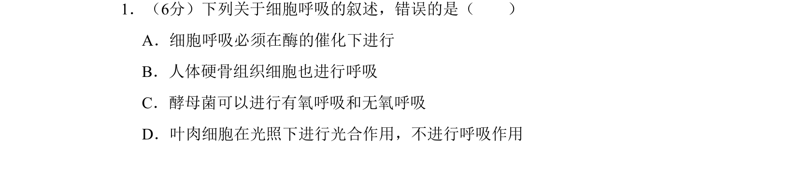
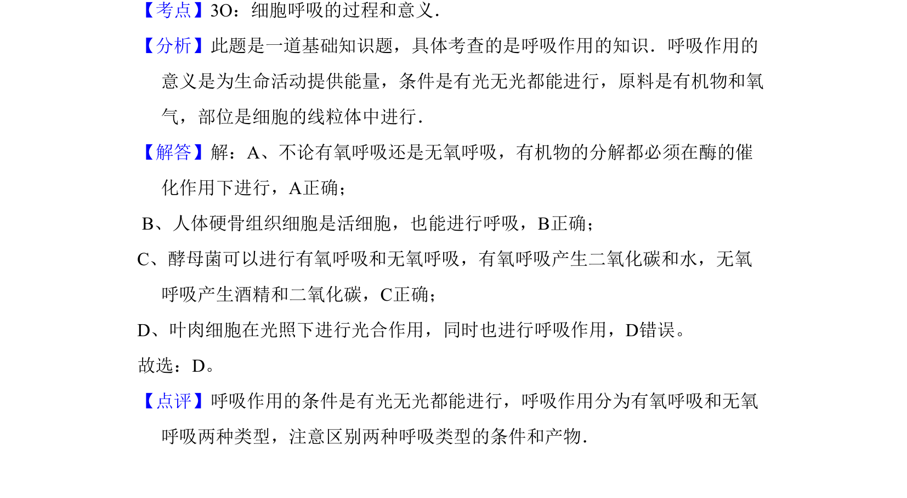

考点：细胞呼吸 有氧呼吸 无氧呼吸

本题考查细胞呼吸的基本概念和条件，辨析光合作用与呼吸作用的关系。

📄 原 PDF 第 1 页：
素材/真题/吉林/2008-2024·（吉林）生物高考真题/2009年高考生物试卷（全国卷Ⅱ）（解析卷）.pdf
1．（6分）下列关于细胞呼吸的叙述，错误的是（ ） A．细胞呼吸必须在酶的催化下进行 B．人体硬骨组织细胞也进行呼吸 C．酵母菌可以进行有氧呼吸和无氧呼吸 D．叶肉细胞在光照下进行光合作用，不进行呼吸作用
【考点】3O：细胞呼吸的过程和意义．菁优网版权所有 【分析】此题是一道基础知识题，具体考查的是呼吸作用的知识．呼吸作用的 意义是为生命活动提供能量，条件是有光无光都能进行，原料是有机物和氧 气，部位是细胞的线粒体中进行． 【解答】解：A、不论有氧呼吸还是无氧呼吸，有机物的分解都必须在酶的催 化作用下进行，A正确； B、人体硬骨组织细胞是活细胞，也能进行呼吸，B正确； C、酵母菌可以进行有氧呼吸和无氧呼吸，有氧呼吸产生二氧化碳和水，无氧 呼吸产生酒精和二氧化碳，C正确； D、叶肉细胞在光照下进行光合作用，同时也进行呼吸作用，D错误。 故选：D。 【点评】呼吸作用的条件是有光无光都能进行，呼吸作用分为有氧呼吸和无氧 呼吸两种类型，注意区别两种呼吸类型的条件和产物．